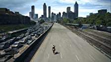
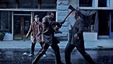
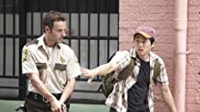
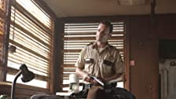

Episodes
1. Days Gone Bye
Deputy Sheriff Rick Grimes awakens from a coma, and searches for his family in a world ravaged by the undead.
2.Guts
In Atlanta, Rick is rescued by a group of survivors, but they soon find themselves trapped inside a department store surrounded by walkers.
3. Tell It To Frogs
Rick is reunited with Lori and Carl but soon decides - along with some of the other survivors - to return to the rooftop and rescue Merle. Meanwhile, tensions run high between the other survivors at the camp.
4.Vatos
Rick, Glenn, Daryl and T-Dog come across a group of seemingly hostile survivors whilst searching for Merle. Back at camp, Jim begins behaving erratically.
After the attack on the camp, Rick leads the survivors to the C.D.C., in the hope that they can cure an infected Jim.
The survivors gain access to the C.D.C. in the hope of a safe haven.